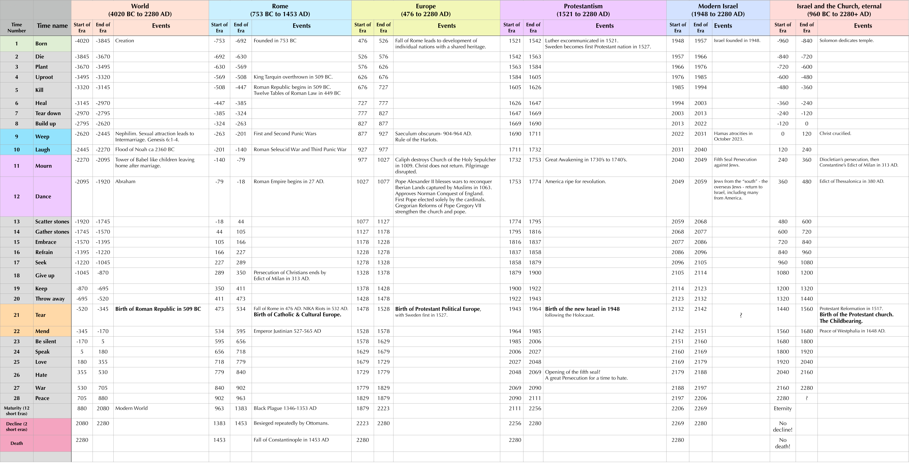
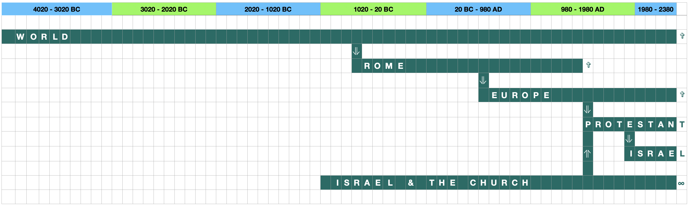

The Motherhood Pattern
24119 words long.
Published on 2024-08-26

- The Mother of all Patterns
- World History as the Literal Birth of Empires
- Spirit-Filled Women
- Comprehensive?
- The Earlier Women
- The Latter Women
- Divining the Spirit
- The Spirit of the Lord: Sarah and the three Mary's
- The Spirit of Wisdom: Hagar and Esther
- The Spirit of Understanding: Rebekah and Naaman's Slave Girl
- The Spirit of Counsel: Leah and Hannah
- The Spirit of Might: Rachel and Deborah
- The Spirit of Knowledge: Job's Daughters and Ruth and Naomi
- The Spirit of the Fear of the Lord: Miriam and Rahab
- A Woman's Journey by the Numbers
- The Law: A Woman's Honor
- Ecclesiastes 3: A Time for Women
- What should we teach children?
- At what age should people get married?
- Job as a Parable of Women's Suffering
- Women do not Suffer for Naught
In college, I drew a picture for an art class assignment. I had hidden in the picture imagery from a novel about a murder, The Onion Field, where the furrows in my field were shaped like onions, hid the outline of a buried corpse, and a cloud was shaped like smoke blowing from a gun. To me it was obvious, but the professor didn't "see" it, so I got poor marks.
Most of us are like my art professor. We give God poor marks because when we read His masterpiece, the Bible, we don't see it. We don't see the subtlety, the power, and the glory concealed in its pages. How do we find that glory? What can make blind eyes see and deaf ears hear?
You can't find it by reading theology books, though you may need those books on your search.
You can't find it by asking clever questions and embarking on a systematic exploration of logic, philosophy, and history, though you will surely need those things, too.
You can't find it by asking the smartest and holiest people in the world to explain it all, even though almost none of us can do without their guidance.
Job told us in chapter 28 of his book that no mortal can find the path to wisdom. Only if wisdom comes to visit you will you make any headway. You must become the kind of person that Lady Wisdom wants to visit and who won't miss her knock on the door if she calls. You must possess a searching heart that is passionate about finding her treasures.
Why did I discover the Harvest Pattern? At risk of being expelled from college, I meditated daily on Habakkuk for eighteen months. The prophet lamented a ruined life and nation without a harvest but praised God nonetheless. I never once spoke or even thought the explicit words, "How do I bring in a good harvest?" I just felt it. I craved it. When over the course of decades after college I lost job after job, did I ever wonder, "What does the Bible say about how to live a productive life? What are the steps involved?" I should have, but it wasn't something that ever made it to the surface of my conscious mind. What did happen was that day by day, year by year, job failure by job failure, the urgency of finding an answer was hammered into my soul. Like Solomon said,
The words of the wise are like goads, and
like nails firmly fixed are the collected sayings;
they are given by one Shepherd.
- Ecclesiastes 12:11
That urgent, passionate, desperate need primed my heart to be on the lookout for clues. Eventually it made its way to the surface after the pieces were gathered but not assembled. Only at the end was I able to put it all together. The same goes for the Growth Pattern. I had no clue how to plan my life. As one born with Asperger's, my deficiency in that area was crippling. Where others could lean on natural ability or good parenting or training, I threw myself upon the grace of God. I wasn't diagnosed until I was in my forties. I didn't know what my problem was or why. I just stumbled though life, but I stumbled with a longing to know what it was that could turn the disorder of my life into a good and achievable plan.
Deep need, frequent prayer and faith in God kept me moving forward. Since God delights to answer such prayers, I found first the perseverance to press on, then the right questions to ask, and finally their answers.
None of that explains how I discovered the Motherhood Pattern. Those other questions were about things that mattered to me. I needed the answers so I could better understand myself, get help and grow as a person. I only discovered the Motherhood Pattern when I paused from my study, looked up from the book I was writing and realized that I was blind and selfish. I had found parts of God's plan for history, such as when He would liberate slaves and address colonialism, racism, and other evils. It was in looking for what I had missed that my error became clear. In all that I had discovered, there was nothing about God's plan for women.
I was cut to the heart. I immediately prayed, "God, what is your plan for the liberation of women from oppression?" Over the course of the next week, He answered. That was December, 2020. In the years since then, I have found more. This article extends ideas expressed in my books. I do not deserve the grace extended to me. I have no business unraveling mysteries that my heart had not pursued. God gave me more that I could ask for or imagine.:
Now to him who is able to do immeasurably more
than all we ask or imagine, according to his power
that is at work within us, to him be glory in the
church and in Christ Jesus throughout all generations,
for ever and ever! Amen.
- Ephesians 3:20-21, NIV
The Mother of all Patterns
The Motherhood Pattern is a feminine variation on the masculine Growth Pattern. It is also a feminine specialization of the Harvest Pattern and the Journey Pattern. It is anchored to the Law Pattern, whose command to Honor Fathers AND Mothers is foundational. In addition, the lives of many of the Bible's noblest women can be used to illustrate the progressive infusion of the Seven Spirits of God into the hearts of the faithful.
The upshot is that only after I had discovered all those other patterns would it even be possible to discover this one. It is the Mother of all patterns. If you take this pattern alongside the Growth Pattern, the gross features of history make sense, not just qualitatively, but quantitatively as well. The grand proportions of history are precise in measure and and in meaning they silence Solomon's ironic protests of vain futility.
The pattern is a parable. It sets forth the stages of development of an individual woman from birth to full maturity, accounting for the trials of marriage and childbearing. Then it zooms out and applies that pattern to the history of whole civilizations at different scales. When one civilization begets another, the pattern begins again at a different scale. At the largest scale, the pattern applies to all of human history, at smaller scales to the combination of Israel and the Church, to the birth of Rome, the genesis of the Reformation Church and the coincident birth of modern Western Civilization. Most recently, it includes the birth of the new nation of Israel. This article will map events such as birth, puberty, marriage, conception and childbirth to their metaphorical counterparts in the history of each civilization.
The Motherhood Pattern does more than explain history. It explains God's purpose in requiring Christian women to suffer so long under conditions of inequality. It offers a new model for ordination to service long overlooked by the Church. This last is critical.
In the Church, some stake out the traditional position that women must not serve as pastors and elders. Others insist that in Christ, there is neither male nor female, so women should be permitted to be ordained and serve in those roles.
Both positions are wrong! For a detailed look at this particular issue, read Against Complementarianism. Here is a summary of the main points:
- All priestly orders have been and must be authorized by God via an explicit divine revelation. "And no one takes this honor on himself, but he receives it when called by God, just as Aaron was." (Hebrews 5:4)
- The start date after which candidates for ordination may be presented is given by God as well.
- The qualifying characteristics of the priests or elders are given, such as personal character, sex or tribe.
- The nature of the authority and religious practices of each such office are spelled out by God.
- For a person to be ordained, they must offer a sacrifice of ordination.
- What is acceptable as a sacrifice of ordination is also regulated by God.
- That sacrifice must occur literally at some point in history.
- The canon of Scripture is closed.
- If women are permitted by God to serve authoritative roles in the church, such instructions must already be in the Bible.
- No unambiguous extension of the requirements for ordination to the existing offices to include women may be found in the Bible.
- If women are to be permitted to serve as pastor or elder, a new model of ordination must be found.
- That model for ordination must have been instituted by a sacrifice that has already occurred in history and identified in prophecy.
Until recently, I would not have been able to find a Biblically supportable defense of women serving as pastors or elders that satisfied all of those criteria. My choices would then be three:
- Deny that women have been so called by God on solid Biblical grounds.
- Affirm that women have been so called by God but admit that I cannot fully defend this position.
- Affirm that women have been so called by God on specious grounds using fallible human arguments.
I spent over thirty years doing the first. Then I spent about three years doing the second. As hinted at above, in 2020 the Holy Spirit persuaded me that women are now permitted to be pastors and elders but only revealed part of the Biblical justification for this. By faith, I openly professed my change of heart and continued to study what the Bible had to say. Then near the start of this year (2024), I found the missing pieces. I discovered the missing model for women's ordination, a prophetic clock that established the time frame for its implementation, the nature of the sacrifice and the sign that it has already been offered and accepted by God.
I would never have found all these things if I had a laissez faire attitude towards Scripture. I accepted my ignorance and the necessity of finding a complete answer. To my knowledge, no one else has discovered this solution to the problem. It is impossible unless you first reflect on the Motherhood Pattern. The heart of the pattern is found in Job and so is the model for women's ordination. You see, Job is a parable for the suffering of women. Because of this, since Job was ordained by God to a priestly ministry of forgiveness at the end of the book, women are also ordained by the same ordination. Furthermore, the chapters of Job form a prophetic clock (as explained in Generational Clocks). That means that the passages in Job that relate to the commencement of that ordination to service are prophetically anchored in time. Job tells us when God gave women the green light to become pastors and elders.
The above claims are substantial. Hundreds of pages in my books or in articles elsewhere on this website are devoted to providing the evidence to back up these claims. The rest of this article will address some of the issues and objections that can be raised. I will begin with the biggest.
Q: Why would God make something so important as women's equality so murky? These ideas must be wrong.
A: Once I repented of my lack of interest in the plight of women, prayed to the Lord with humility, and asked a sincere question, the beginning of an answer came to me over the course of a week. That gave me the tools and motivation to search for the rest of the answer.
The core of the answer is in Job, the first book of the Bible to be written. God caused the middle chapter of the Old Testament to be Job 29. And what is the middle verse of that chapter?
The one who was dying blessed me;
I made the widow’s heart sing.
- Job 29:13
That means that God's daughters are close to His heart. Widows were and are among the most vulnerable of people, without someone to protect them from harm. God sent his greatest prophets to help widows.
Important parts of the answer also appear at the proper place (according to the prophetic clocks in those books) in Proverbs, Song of Songs, Ecclesiastes, Psalms, Matthew, and Revelation. Once you see the evidence, you will realize that it is only because of the hardness of our hearts that we have for so long been unable to grasp the plain meaning of what is written.
I wrestled with what is the logical order to present the information to follow. Then I decided that I am tired of logic. As I meditated on the subject before sitting down before my keyboard, one of the ideas from my books multiplied like bunnies. (There is a bunny chewing on my lawn thirty feet from where I am sitting on my patio.) Before, I had found a single political entity whose progress through history followed the Motherhood pattern: the Church. Now I know of at least six! Seeing something new is exciting, so I am going with exciting instead of logical.
World History as the Literal Birth of Empires

Just as a woman gives birth to a child, so does one civilization give birth to another. Before the last few years, that truism would have been as trite and meaningless to me as to most people. It tells you nothing about how to live, to plan, or to understand this world. It tells you nothing but it could tell you everything if you look close enough.
When I wrote Peace, like Solomon Never Knew, I discovered things that turned my view of history upside down:
- The poem in Ecclesiastes 3 is a parable consisting of many metaphors that describe the course of a human life from birth to maturity in twenty-eight steps constituting seven phases, the Growth Pattern.
- The last few chapters of Ecclesiastes continue the pattern on through middle age to the times of physical and mental decline and death.
- The poem is a parable for the development of spiritual Israel into the Church, then follows the church until it reaches full maturity in the faith.
- The church is eternal; it will not decline and die. Only the twenty-eight times ending in "a time for peace" affect it.
- The world with its many cultures and other religions is not eternal; it will decline and die.
- Thus the world's twenty-eight times must be extended to include another fourteen times (of shorter duration) to bring it through middle age to its inevitable fall.
Finding Solomon's Celestial Clock (for Israel and the Church) and the Grand Father Clock (for the whole world) was exciting. They interpreted the times as they apply to men. Many of the times have an alternate meaning when applied to women. For example, for men, "a time to tear" is a disagreement that must be resolved or even a civil war. For women, "a time to tear" is the day that she delivers her child.
When I later found the Motherhood pattern, I saw that it could also be applied to the Church. When you do this, it shows that the Protestant Reformation was a time to tear, when the Roman Catholic Church gave birth to the Protestant Church. It also triggered a Civil war. Both the masculine and feminine meanings apply.
Six Civilizations. This past week, I discovered six examples of civilizations giving birth in this way. That is not the surprising part. What shocked me was that even though each of these parent civilizations began at different times and lasted different numbers of years, the numerical ratios between each phase of growth and the whole remains constant. God has literally stretched out the history of these empires or cultural entities from his template and cut them to size. This perfection in proportion proves that there is a divine ordering to history. Knowledge of this divine ordering may only be found in the Bible, in the pages of its wisest scholar and king, Solomon.
The table heading this section maps the historical time periods to empires, to historical events, to Solomon's times, and by the colors in the left column, to key phases in a woman's development. These are the empires:
- The World. This encompasses all of human history.
- Rome. This follows Rome through its existence as kingdom, republic and empire.
- Europe. From the ashes of the Western Roman Empire rose a combative confederacy of nations, Catholic Christendom. This was a marriage of Church and state, neither pure empire nor pure church.
- Protestantism. Torn from Catholic Europe's belly by Reformation and revolution, a new religio-political entity arose. This was and is a different mixture of politics and religion.
- Modern Israel. The Jewish people were ripped from Europe by a Caesarian section during the Nazi Holocaust.
- Spiritual Israel (including the Church). This is the true Kingdom of God, not identified with any human political entity and composed of all true believers down through history.
Of the six entities above, five are mortal. They will come to an end. That includes the Roman Catholic Church and political Protestantism (such as what once governed the United States and many other nations). Only the true church will last for eternity. It will be fully manifested as a perfected visible and political entity only when Christ returns.
Life Changing Events. To understand the table, first a word about the most dramatic phases of a woman's life:
- Birth (a time to be born)
- Puberty (varies, but falls during the times to weep or laugh)
- Marriage (often during a time to mourn)
- Conception (often during a time to dance)
- Childbirth (a time to tear)
- Post Partum recovery (a time to mend)
- Death
Each of those life phases maps to a critical development in the history of an empire or cultural entity. In the table, birth is colored green, puberty blue, marriage and pregnancy pink, childbirth and recovery orange, and death red. Most cells in the table are left blank, to emphasize the remaining events, those that match these key phases. If you are curious about what goes in the missing cells, every one of the times of Solomon is matched to a historical event for the whole of world history in the chapter "A Grand Father Clock & a Silver Cord", summarized in Celestial Clocks. Israel and the Church are similarly treated in multiple chapters and summarized in the same article.
Time Ranges. It is easy to pick a sequence of events in chronological order from the history of an empire that tell almost any story. All you have to do is break the time line into ranges at arbitrary and convenient places. That is why qualitative orderings of events are deceptive. Proponents of some theories of eschatology grab a set of prophecies and insert specious and subjectively chosen time intervals between each pair of events to prove the soundness of their arrangement.
In the case of these six instances of the Motherhood Pattern, the time intervals follow precise mathematical formulas built upon clues provided in Ecclesiastes and elsewhere. Here are the rules:
- There are two patterns: one for eternal entities and the other for mortal ones.
- The eternal entities have twenty-eight growth steps of equal duration. They end with that kingdom achieving full maturity.
- The mortal entities have twenty-eight growth steps of equal duration followed by fourteen more complete phases of a shorter duration and a thirteenth interrupted phase. They end with that kingdom entering a period of decline ending in destruction.
- The basis for twelve of the remaining phases is twelve parables about the process of building a house in Ecclesiastes 10.
- The basis for the next two phases is two calls to remember: one for days of darkness in Ecclesiastes 11 and one for evil days in Ecclesiastes 12. These phases are the days of mental and physical decline.
- The ratio of the length of the growth years to the years of maturity and decline comes from studying human development and the life of Solomon.
- Each growth phase of seven steps lasts seven years in the typical person's life, so the total period of growth is 49 years. This means that one of Solomon's times lasts 7/4 years (1.75 years)
- A good estimate of Solomon's age at death is 63 years and a few months.
- Thus the fourteen periods of maturity and decline sum to 63 - 49 = 14 years, or one year per period.
- Taken together, each time takes up a portion of Solomon's life equal to 1.75/63 or 2.77%.
- Each phase of maturity or decline lasts 1/63 of a life or 1.58%.
- There is a final, short phase of unknown duration at the end of life, as a person nears death. That matches the last few months of Solomon's life; we don't know how many there were. That phase may last 1% or less of your life.
The above proportions were applied to the start and end years for each empire to arrive at the ranges in the table. That removes the subjectivity of when in history to look for the major events concerning each empire. What does it show us? An important thing that this DOES NOT show us is that every civilization follows this pattern. Each of the civilizations on this chart are the subject of prophecy. They are not representative, they are special. One way they are special is how they are chained together.
Six Civilizations, but only five babies delivered.

In the diagram above, you can see a chain of civilizations, with each giving birth to the next. Broad humanity produced Rome, whose partial collapse in 476 AD produced a decentralized Europe. Europe in turn gave birth to the Protestant Church and cooperative democratic nations like the USA, which in turn helped pave the way for the creation of Modern Israel.
In a second track, taking Israel and the Church as a single entity (an Olive tree with natural branches and wild branches grafted in), you find a second parent to the Protestant Church.
No child is shown for Modern Israel. I doubt there will be one. Even if there is, it is in the future and I have no clue what it might be.
Now for some of the finer points of the earlier table. Each of the six civilizations passed through times that match the key transformational events of the Motherhood Pattern. Let's explain why the historical events are fitting realizations of parts of the pattern.
Birth. Birth is the easiest to match.
- The World began with the Creation and Fall of Mankind. My best estimate for that event is 4020 BC, as worked out in Dating the Creation.
- Rome began with the founding of the city of Rome, traditionally given as 753 BC.
- Europe? When did the idea of "Europe" begin? You will not get historians to agree on a date. I chose 476 AD, the year of the fall of Rome, because after that there would be no turning back to the Rome that was before. Many linguistic, cultural, legal and religious traditions persisted to bring a measure of unity to the region, but not the strong central government of the empire. A new and combative community of nations arose. This decentralized civilization was a new development in the history of the world.
- Protestantism as a religious idea began when Luther posted his ninety-five theses on the door of a church in 1517 AD, but that is not the date used here. Protestantism as a political force got its start with a series of events. One was Luther's "Open Letter to the Christian Nobility of the German Nation Concerning the Reform of the Christian Estate" of 1520, urging German princes to take up arms, defend Protestant truths and enable their subjects to practice them freely. Another was Sweden's adoption of Lutheranism in 1527, making it the first nation to become Protestant. Yet between public statements and political action, the true birth of the movement was when a single man stood apart from the church, calling for it to reform. In 1521, Luther was excommunicated from the Roman Catholic Church. The new church started as a church of one.
- Modern Israel was founded in 1948 AD as sanctioned by the new United Nations. The Jewish people who built this new nation did not do so in a vacuum, nor did they rely solely upon truths derived from their ancient faith. Much of how they structured their society and shaped their culture passed to them from the West, for better or for worse.
- Israel and the Church are politically distinct but the latter is the spiritual continuation of the former. I chose as its start neither the birth of Abraham, nor Isaac, nor Moses, nor David. Instead, I chose the dedication of the temple in Jerusalem by Solomon in 960 BC. I wrote a whole book about why, but that is when Solomon's Celestial clock begins. God came down and filled the temple with His glory. Unlike the other civilizations, this was not birthed from a preceding corrupt human civilization. This civilization was born of God and will never end.
Puberty. When a man or woman reaches this time of life, big changes occur. They are emotional, intellectual and biological. When a civilization reaches this point in its development (in the times to weep and laugh), it often experiences a sharp discontinuity. The changes can be violent.
- The World. About a century prior to the Flood of Noah (matching a time to weep), it says in Genesis 6 that the Sons of God fell for the daughters of man. Some people think fallen angels cohabited with human women to produce a race of giants, the Nephilim. A likelier explanation is that men from the godly line of Seth intermarried with daughters from the sinful line of Cain, ruining the morals of Seth's descendants. This is in keeping with the theme of puberty: uncontrollable urges in the hearts of young people that if not checked by parents and society can ruin their lives. The next era (a time to laugh) was no laughing matter. God sent the flood. The world that resulted was as complete a break from the past as is possible to imagine. It included the establishment of capital punishment for murder, the beginnings of government.
- Rome. When Rome reached the puberty stage, its lust was not for women but for territory. The Punic Wars and the Roman-Seleucid War (plus other conflicts in this era) elevated the Roman Republic, making it the undisputed ruler of the Mediterranean.
- Europe. The Saeculum obscurum or "Rule of the Harlots" of the Tenth Century AD was a dark period for the Catholic Church. Instigated by Marozia and Theodora, literal sexual immorality, seduction, and the sale of church offices completely corrupted the church's leadership.
- Protestantism. The Pietism Movement of the 17th and early 18th centuries took "a time to weep" literally. The Holy Spirit revived the church, causing people to weep uncontrollably as they faced the guilt of their sins and pleaded with God for salvation. This was one of the roots of Evangelicalism.
- Israel. Modern Israel is in "a time to weep" right now. They mourn the dead, disfigured, injured, and raped victims of the despicable barbarism of Hamas, committed on October 7 and 8, 2023. May God have mercy on the souls of the dead and bring the wicked to justice. Pray for the peace of Jerusalem.
- Israel and the Church. The time to weep was the crucifixion of Jesus Christ. The time to laugh was the growth of the infant church. At this time, how people understood and related to God underwent a cataclysmic change, just like a child passing through puberty to become an adult.
Marriage and Conception. Marriage is paired with "a time to mourn" and conception with "a time to dance". This reflects the reality that young women most often were married against their consent and lost most of their freedom upon marriage. Before their wedding guests, their bodies might be dancing, but within their hearts they were mourning their new servitude. On the other hand, society placed great importance upon having children, so becoming pregnant was an occasion to dance. Nevertheless, when a couple married, they separated from their parents to form a new household. They left. How does this jibe with the course of empires?
- The World. The aspect of marriage most in view for this empire was the Tower of Babel and the dispersion of the nations. Like children leaving home after getting married, speakers of different languages left the land of Shinar and spread across the globe. The time to dance then matches Abraham receiving the news that his wife would conceive and he would be a father in his old age.
- Rome. The Roman Republic experienced a seismic change during its "time to dance". After the murder of Julius Caesar, it was transformed into an empire in 27 BC.
- Europe. In the eleventh century, a drifting Catholic Church found its mooring and launched itself in a new direction. In its "time to mourn", the Islamic Caliph destroyed the Church of the Holy Sepulcher in 1009 AD and harassed Christian pilgrims venturing to the Holy Land. At the same time, the millennial anniversary of Christ's departure came and went and yet he did not return, a great disappointment. On top of that, the Great Schism finalized the split between east and west. Problems like the Investiture Controversy and the Church's disability due to secular powers choosing its leaders rendered it powerless. Also, memories of the debauchery of the popes in the previous century and ongoing sexual immorality among the clergy were devastating to the reputation of the Church. Popes Alexander II and Gregory VII launched many reforms, including enforcing the celibacy of priests. The popes for the first time were chosen solely by the cardinals. Pope Alexander II authorized the Normans to invade England in 1066, further strengthening the church. Alexander blessed the launching of a holy war against the Moors on the Iberian peninsula, advancing the Reconquista. All these actions laid the political, military and philosophical groundwork for the First Crusade of the next era.
- Protestantism. The Great Awakening and political developments in America caused the Colonists to move in a different direction from Great Britain. The American Revolution would occur in the next era, but the groundwork was laid in this time, symbolized by the Boston Tea Party of 1773 and Britain's passing of the Intolerable Acts in 1774. In keeping with a new couple's drive to leave their parent's homes and set out on their own, millions of people left Europe during the preceding century to go to the New World.
- Israel. This era of Israeli history (2040-2059 AD) remains in our future. Based on the other prophetic clocks I have discovered, the likely manifestation of "a time to mourn" will be the opening of the Fifth Seal of Revelation. This will occur during "a time to hate" on the Solomon's Celestial Clock. A great persecution will break out against Jews. By the hundreds of thousands - maybe millions - they will flee the Americas for Israel. "A time to dance" will be the safe resettling of many of them in Israel.
- Israel and the Church. In the larger clock, "a time to mourn" was Diocletian's persecution of Christians in 303 AD. The mourning ended when Constantine issued the Edict of Milan, ending persecution of Christians by Rome. This was followed by "a time to dance", when Theodosius I issued the Edict of Thessalonica, making Nicene Christianity the state religion of Rome. This marriage of church and state is one of the two strongest connections between an empire and the Motherhood Pattern.
Birth and Post partum recovery. Most of these civilizations gave birth to another. The verdict is out on modern Israel.
- The World. In Rome's "a time to be born" treatment above, that civilization was born in 753 BC with the founding of the city of Rome. In this treatment for the world's clock, Rome was "born" in 509 BC, when its last king was deposed and the Roman Republic was born. That seems more appropriate, as tearing can symbolize civil war and Rome had that in spades in this era. After that, the "time to mend" was Rome's acquisition of control over most of the Mediterranean as a result of the Punic Wars and the Roman-Seleucid War.
- Rome. Events in both halves of the Roman Empire signify the tearing. In 476 AD, Rome fell and the Western Roman Empire ceased to exist. In 532 AD, the Nika riots and other unrest nearly shattered the Eastern Roman Empire (Byzantium). The Plague of Justinian, numerous wars and the chilling effects of volcanic activity devastated the empire. What would become Europe was carved out of the remains of the western empire and began to grow in a new direction. The post partum recovery would be Justinian's reversal of decline in the east and Pope Gregory the Great's brilliant diplomacy, vision and leadership in the west.
- Europe. None dispute that the Protestant Reformation of the 16th century was the birth of a new civilization. Many revolutions in philosophy, science and politics occurred in rapid succession, upending the world order. This includes the scientific revolution, the age of reason and eventually the industrial revolution. The wars of religion and the General Crisis of the 17 century spilled a lot of blood. This blood is the blood of post partum hemmhoraging, staunched only by the Peace of Westphalia and subsequent moves toward religious liberty and tolerance.
- Protestant Christendom. This civilization gave birth to modern Israel in 1948. It also nearly killed its child. The postwar period and the Cold War were the time of recovery.
- Israel. Will modern Israel give birth to another civilization? Only time will tell...
- Israel and the Church. Both Europe (as a political collective with a Christian facade) and the invisible church gave birth to the Protestant church in the 16th century.
Using two dates for the "birth" of Rome (753 and 509 BC) that are centuries apart bothers me. It looks wrong. Rome is a complex beast. Reflecting upon King Nebuchadnezzar's dream from the Book of Daniel was helpful. In the dream, the king saw a single statue with a head of gold, shoulders and chest of silver, belly and thighs of bronze and legs of iron. Those four metals represent four empires, but the imagery is of one statue, one metal man.
- 626 BC: Founding of Neo-Babylonian Empire - the Head of gold
- 509 BC: Roman Republic founded
- 550 BC: Founding of Achaemenid (Medo-Persian) Empire - the Shoulders and chest of silver
- 359 BC: Founding of Macedonian Empire by King Phillip II - the Belly and thighs of bronze
- 190-64 BC: Roman Republic defeats Seleucid Empire (a remnant of Alexander's Empire), beginning with battle of Magnesia ad Sipylum in 190 BC, until full conquest in 64 BC.
- 27 BC: Founding of Roman Empire, where Rome finally becoming a beast - the Legs of iron.
From the above, it is clear that the development of Rome ran in parallel with the rise and fall of the three preceding empires on Daniel's sequence. A baby is normally delivered head first, so the legs and feet come out last. The feet were delivered in the latter phase of "a time to tear", but the head and shoulders came out earlier, in a "time to throw away", which ran from 695 to 520 BC at world scale. The belly and thighs came out of the birth canal with the conquests of Alexander the Great, starting with the defeat of Persia at the battle of Gaugamela in 331 BC, part of "a time to mend". This was one messy delivery!
From the preceding we see that two intersecting prophetic metaphors are both satisfied. Rome arrived as a single kingdom or republic and as part of a collection of four empires that constituted a single statuesque entity. Only Rome's empire identity belongs to the statue, but its existence as a kingdom and republic are included in the other reference to Rome as distinct from those three prior empires. The tides of history are complicated, but the Bible's prophets captured this complexity elegantly in the words they left for us to ponder.
Death. One kingdom will never die: the Kingdom of God, given here as Israel and the Church, formed into a single olive tree (Romans 11:17-24). Most of the civilizations on the list will end with the return of Christ, though some might be absorbed into Behemoth or Leviathan near the end and lose their identity earlier than my analysis predicts. Only one of these civilizations has already died: Rome.
- The Western Roman Empire died in 476 AD when Rome fell to Odoacer the Ostrogoth. In poetic fashion, Odoacer was assassinated on March 15, 493 AD. This mirrored the assassination of Julius Caesar on the same date, a crucial event that triggered the formation of the Roman Empire.
- The Eastern Roman (Byzantine) Empire died in 1453 AD with the capture of Constantinople, falling to the Ottoman Empire.
This structure of history repeats the same pattern six times at longer and shorter time scales. Each nested pattern instance begins at the same place proportionally within the pattern enclosing it. This is the signature feature of my system of eschatology, Fractal Historicism, as introduced in The End Times. That these gross features of history may be so composed into a regular pattern is marvelous.
However, the use of the metaphor of childbirth to describe and quantify history might make women mad. Has God likened the tribulations of history to the pain and sacrifice of carrying and bearing children in a gratuitous way? Does this not rob women of the dignity of motherhood? Are their sacrifices not minimized by comparing them to the monumental battles fought by men to set up empires and build civilizations? The Book of Job uses words and images related to a woman struggling through a difficult pregnancy as an analogy to the suffering that Job endured. Job was called the most righteous man alive. His unjust suffering was therefore the worst suffering that anyone (male or female) ever endured (prior to Christ). That makes the suffering of the man, Job, greater than the suffering of women. The analogy seems to scream out which is the greater and which the lesser degree of pain.
Wrong. Once you understand the prophetic intent of Job and its Motherhood Pattern, you will find that the inequality symbol points the other way. The virtue of the suffering of many women outshines that of Job. This follows via a proof by induction. With mathematical induction, first you prove a statement is true for a small number. Then you prove that if it is true for any number, it is also true for some larger number. If you do that, then by induction, the property is true for an infinite set of larger numbers. Job is the small number. Millions of women down through history are the larger numbers. What is the property to be proven? The property is the truth that if a person possesses and retains their faith in God yet endures great suffering, by that suffering God will pour His wisdom into them. Job refused to curse God and held onto his faith. The Lord then poured great wisdom into him. Women have individually and collectively suffered greatly, both for their faith and generally due to the oppression that they have endured. If God remains true to His character, He will pour out a proportionally greater blessing of wisdom upon the women of the church through the communication channel of suffering.
What does this mean? It means that the suffering of Christian women for long centuries constituted a long spiritual pregnancy and the delivery of that child was the birth of the Reformation church. This pattern is not a mere analogy. It is a spiritual reality. This suffering by women was not for no reason. It had a glorious purpose and that purpose was fulfilled and continues to blossom.
The suffering of women is not an unending punishment by an unforgiving God. Nor is it just the wrath of Satan. It is a channel by which God pours out immense blessings of wisdom upon the church and the world. In Hannah's Song, I recount the spiritual blessing I received by visiting a dying woman of faith, Janet Sullivan. That blessing not only set me free from a decade of depression, it twenty-five years later delivered the insight that unlocked for me much of the meaning of the Book of Job. If not for Janet, I would not have understood Elihu or how this is all connected to God's eternal purpose for the suffering of women.
If God speaks to women through their suffering, what has he been saying? Lots! It is time to look in on some of the most virtuous women in the Bible.
Spirit-Filled Women
There is a flow and a direction to the tide of the spiritual ocean on which we are adrift. The tide comes in, then it goes out. We shall look at seven women into whom the Holy Spirit poured wisdom, then a second set of seven women from whom the Spirit's power poured out, doing great things in the world. This symbolizes how we are first taught the truth when the tide comes in, then we act in truth and power when the tide goes out.
The first seven women lived during the time of the Patriarchs. The second set lived after that, on up until the resurrection of Jesus Christ. These are not the only important women in the Bible. I have left out Elizabeth, Anna, Martha, Huldah, and Jehoshaba and the women of Acts. (And Tamar. She scares me.) Because of this, I cannot decide whether the ordering of the revelations that I give is intentional or accidental. Even if the order is not as tidy as what I present, the comprehensiveness of God's gifting to women cannot be denied. Of this we can be sure. If God spoke quietly to women before Israel became a nation and firmly while it was one, surely he has shouted to the women of the church in the days since.
Comprehensive? How can we evaluate whether the Holy Spirit's communication to women has been comprehensive or not? Isaiah 11:2 names for us the Seven Spirits of God. This section will show that each spirit visited at least two women in the Bible, one during the time of the Patriarchs and one after that, up until the time of the resurrection. Like the tides, the first seven were visited by the Spirits in one order and the second seven in reverse. This forward and reverse listing of matching ideas forms a chiasm, a common literary device found in the Bible. In a chiasm, the most important idea is the one at the center. In our case, that is the Spirit of the Fear of the Lord.
Are the spirits through with women? No! The letters to the seven churches in Revelation 2-3 address Christians throughout all ages. Each spirit holds in reserve the new wisdom needed by one church, in Isaiah's order (the forward order). If the Seven Spirits were delegated to visit those churches down through the ages, they will surely be visiting Christian women again. Among us may live another Miriam or Esther or Mary. Once again, the last spirit to visit will be the Fear of the Lord.
The connection between the fourteen women whom we will soon study and the Seven Spirits of God is revealing. Peace, like Solomon Never Knew provided evidence that each spirit has an affinity for one of the seven Bible books that constitute the Seven Pillars of Wisdom. Indeed, the order of the spirits governs the proper order of the pillars. Likewise, each spirit has an affinity for a different time in Solomon's Growth Pattern and a different phase in Jesus' Harvest Pattern. Again, the order of the spirits matches the order of the steps in those two patterns. Also, when studying the drawing of seven swords of judgment, one per millennium of history, the order of the swords also matched the order of the spirits. Revelation 5:6 tells us that the Seven Spirits of God were sent out into the earth. All God's plans are orderly, so they were sent out in order.
Now let's meet the fourteen women (or groups of women) and the spirit that visited each.
The Earlier Women.
- Sarah - Lordship
- Hagar - Wisdom
- Rebekah - Understanding
- Leah - Counsel
- Rachel - Might
- Job's daughters (Jemimah, Keziah, Keren-Happuch) - Knowledge
- Miriam - The Fear of the Lord
The Latter Women.
- Rahab - The Fear of the Lord
- Ruth and Naomi - Knowledge
- Deborah - Might
- Hannah - Counsel
- Naaman's slave girl - Understanding
- Esther (Hadassah) - Wisdom
- A Trinity of Mary's (Mary the mother of God, Mary of Bethany and Mary Magdalene) - Lordship
For most women, the chronological order of their birth is obvious, so need not be mentioned. That leaves a few that need explanation.
First, though Jacob loved Rachel, he was tricked into marrying Leah first. She was Laban's firstborn daughter anyway.
Second, though we do not know for sure when Job lived, evidence points to a time between the lives of Jacob and Moses. This allows us to place his daughters before Miriam.
Third, we are not sure when during the time of the Judges that Ruth and Naomi lived. Who came first, Ruth or Deborah? The famine that Ruth's book speaks of is most likely the Great Famine of the 13th century BC, a fifty-year famine that ended the Bronze Age and brought down empires. If so, the likeliest sequence of events is that the famine and a time of foreign oppression in Israel forced Naomi and her husband to flee to Moab.
Why Moab? After Ehud the Judge subdued Moab, Israel enjoyed eighty years of peace with Moab (Judges 3:30). A subsequent wave of oppression by the Canaanites is given in Judges 4:1-20. Only after that oppression ceased and brought improved conditions in Israel would it make sense for Naomi to return. That would only happen with the rise of a new judge in Israel. Based on the chronologies, the closest judge is Deborah. Thus the trials of Ruth and Naomi began before Deborah became Judge, but were resolved after Deborah and Barak's victory over Sisera.
Fourth and final, the Mary's can be ordered with Jesus' mother coming first since his birth happened first. Then we must put Mary Magdalene last because she was first to see the risen Christ.
Divining the Spirit
For some of these women it is easy to identify a single one of the seven spirits that flowed into or out of them. It is easy because so few words are used to chronicle their lives; the Bible has focused our attention on one. For other women in the list, because more of their story is told, the operation of more than one spirit is evident. In this analysis, only the spirit that fits according to Isaiah's canonical ordering will be given.
In the following, a woman or group from the first list (from the days of the Patriarchs) will be paired with a name from the second list (between the days of the monarchy and the time of Christ). Names will be taken in forward chronological order from the first list and reverse order from the second, since they share the same spirit.
(1) The Spirit of the Lord: Sarah and the three Mary's
Though more is written about Sarah than many other women in the Bible, the New Testament writers helpfully focus our attention on one character trait: her faith.
For this is how the holy women who hoped in God
used to adorn themselves, by submitting to their
own husbands, as Sarah obeyed Abraham, calling him lord.
And you are her children, if you do good and
do not fear anything that is frightening.
- 1 Peter 3:5-6
Sarah's faith was twofold. She had her own hope in the Lord and also trusted that her husband had heard from the Lord, so by following him she was following the Lord. To leave her home country and do all the other courageous things entailed by being the wife of Abraham required great faith.
By faith Sarah herself received power to conceive,
even when she was past the age, since she considered
him faithful who had promised.
- Hebrews 11:11
This article is about God's plans for motherhood. It all began with Sarah. The Spirit of the Lord or Lordship is the spirit that imparts faith. When Sarah laughed at the angel's words (Genesis 18:12), it showed that she needed more faith. Sarah's place in the Bible is not that she was special because she HAD great faith. Her place was secured because she RECEIVED great faith. This spirit gave it to her.
In the Harvest Pattern, the first step is preparation. The essential preparation for every harvest is faith in God. In the incarnation, that preparation was built upon the faith of Mary. She believed the words of the angel. Just as faith flowed into Sarah to enable her to conceive, the Spirit of the Lord - nay the very Lord himself - flowed out ot Mary.
God is Trinity. The virgin birth was a physical miracle so demonstrates the power of the Father. Mary of Bethany, sister of Lazarus and Martha, demonstrated the work of this spirit in a second way. She sat at the feet of Jesus, listening and learning. Hers was faith that learning the Word was more important than any other responsibility (Luke 10:38-42). That leaves Mary Magdalene to represent the Holy Spirit. She beheld the Spirit's power like none other. Are there Seven Spirits of God? Mary Magdalene was delivered from seven evil spirits (Mark 16:9)! She was first in line to marvel at the risen Christ.
How marvelous that God worked through these three women, all named Mary, to reveal His nature as a Trinity to the world.
(2) The Spirit of Wisdom: Hagar and Esther
Wisdom is always borne of suffering. Hagar was a slave, mistreated by her mistress, who had fled into the wilderness (Hagar 16:1-16). What did God do? His angel called upon Hagar to return to her mistress and endure more years of suffering. Only after this would she receive her boon, to become the mother of many nations through her son Ishmael.
Just as God's wisdom flowed into Hagar, persuading her to follow a painful path to her goal, so it flowed out of Esther. She listened to her uncle Mordecai's wise advice and asked others to pray and fast for her so that she might know what to do. After that she conceived and executed a plan that could have gotten her killed or exiled but instead led to the salvation of her whole people from genocide at the hands of Haman. As Solomon said,
Wisdom gives strength to the wise man
more than ten rulers who are in a city.
- Ecclesiastes 7:19
The nobleman Haman perished with his ten sons, his ten rulers in the city of Susa, the capital. In that case, wisdom gave strength to a wise woman.
So we have two women, Hagar and Esther. By the spirit of wisdom one created a new nation and by that same spirit the second saved hers.
(3) The Spirit of Understanding: Rebekah and Naaman's Slave Girl
Understanding is bound up with worship. Its position in the Harvest Pattern then pairs it with the seed of the gospel or of any incipient knowledge sent from God that has not yet grown and flowered into its full implications and impact. To worship is to accept, take in and treasure that which flows from God. In the story of Rebekah, Abraham's servant is sent on a mission to find a wife for Isaac. When he believes he has found the right girl, he openly praises and worships God. It was then up to Rebekah to decide if she believed and trusted this stranger from afar. It is symbolic that Rebekah proved herself by her hospitality in offering to water the servant's animals. It is a sign of her faith that when offered the choice to delay for ten days to say her goodbyes or immediately leave for a strange place to marry a strange man, she responded like this:
And they called Rebekah and said to her,
“Will you go with this man?”
She said,
“I will go.”
- Genesis 24:58
Rebekah received the words of Abraham's servant into her heart and left her family. She understood them to be true. She and her family received gifts of gold and other precious things from Abraham, but the second woman of understanding received nothing. We don't even know her name. Syria warred against Israel and captured many slaves. The commander of the Syrian army was named Naaman. His wife's servant girl was one of the slaves captured by Naaman, as related in 2 Kings 5:1-19. Naaman suffered leprosy. His servant girl then did something that makes her a hero of the faith: she loved her enemy. She told her master, Naaman, about a prophet in Israel who could heal him of leprosy. That prophet was Elisha. In a parallel to the story of Rebekah, water again comes into play. Naaman is instructed by Eliha to wash himself in the Jordan seven times. (There is that number again!) Ceremonial washing is an act of worship. Naaman almost refuses to do this because he thinks it stupid; it is the understanding of another of his servants that persuades him to do it. At the end, Naaman begs Elisha for forgiveness in advance for standing at his king's side in a pagan temple in false worship, a thing he would be required to do. How we need to be washed of so many filthy things!
(4) The Spirit of Counsel: Leah and Hannah
In the Nicene Creed, recited and believed by most Christians, Orthodox, Catholic and Protestant, we find these words (with the disputed Filioque clause included in parentheses):
We believe in the Holy Spirit, the Lord,
the Giver of life, who proceeds from the Father
(and the Son).
With the Father and the Son He is worshipped
and glorified. He has spoken through the prophets.
The Holy Spirit is the Counselor and the voice of the prophets. The Holy Spirit is also the Giver of Life. Both these women, Leah and Hannah, needed their Giver of Life. Leah was unloved by her husband. Hannah was dearly loved by hers (but hated by her husband's other wife). Each was barren. Each hoped to be vindicated by the birth of a son. Their lives were intertwined prophetically.
Hannah prayed, "The barren has borne seven, but she who has many children is forlorn." (1 Samuel 2:5b) After pouring her broken heart out to the Lord, Leah bore six sons to Jacob plus one daughter. Leah is she who "has borne seven". Leah was the godly example that gave Hannah the faith to plead with God and believe Eli the priest's word when he blessed her:
Then Eli answered,
“Go in peace, and the God of Israel grant
your petition that you have made to him.”
And she said,
“Let your servant find favor in your eyes.”
Then the woman went her way and ate,
and her face was no longer sad.
- 1 Samuel 1:17-18
I read this story many times over the decades but only recently discovered the power of this verse. After this word from Eli, Hannah walked away from the temple at peace. The peace came BEFORE she got pregnant, not after. That is the proof of faith. I can remember three times in my life when I was praying urgently for something and then stopped praying, at peace. I stopped not because I got what I asked for or because I was giving up. I stopped because, like Hannah, in faith I believed that God had heard me and promised to give me what I needed.
- The first such time was in 1991, after praying for about thirty minutes to be accepted on a mission trip that had already turned me down.
- The second time was in 2005, after praying for over three weeks for healing when I lost hearing in my left ear and being told by a doctor that I would not get my hearing back.
- The third time was in the mid 2010's, after praying and fasting one day a week for three years to see God's glory.
In each case, the Lord gave me what I asked for: a place on the mission trip was extended by phone call minutes after I ended my prayer, the miraculous healing of my ear came two days after the doctor's discouraging word, and deeper insight into God's word arrived a year or so after my fast ended and continues to this day. This is called the prayer of faith. Many people talk about it. They have no idea what they are talking about. Hannah prayed the prayer of faith. Listen to her.
The Spirit of Counsel flowed into Leah and gave her seven children. The Spirit of Counsel flowed out of Hannah and gave the world a great prophet, Samuel. It also overflowed in her prayer. As related in Hannah's Song, her prayer in 1 Samuel 2:1-10 is an amazing prophecy of the future, structured according to the Ten Commandments and the Harvest and Growth Patterns. Hannah even hints at the existence of the Seven Pillars of Wisdom a century before Solomon named them.
Why do I respect these women of faith? What caused my estimation of their value to soar? I followed the threads. I was trying to decide if I had found the seven pillars of wisdom, only to learn that Hannah knew of them first. "For the pillars of the earth are the Lord's, and on them he has set the world." (1 Samuel 2:8c) Surely her words were a source of inspiration even for Solomon! Only once I began to respect the profound power in Hannah's prayer did I note the connection to Leah. I had thought little of Leah, except pity. Not so Hannah! If Hannah was wise and filled with the Spirit, surely the woman whose example helped her hold on through years of despair is worthy of respect. God has used the suffering of barren women to deliver wisdom that in turn has blessed the world. We can trace the path further.
Sarah -> Leah -> Hannah -> Samuel -> Solomon -> Habakkuk -> Elizabeth -> Mary -> Jesus.
By the Spirit of Counsel, no one has to be barren, no life be futile or vain.
(5) The Spirit of Might: Rachel and Deborah
The bitter rivalry between sisters Rachel and Leah and the heartache each suffered should be enough to convince the world that polygamy is a bad idea. The heart of Rachel's pain is laid bare in Genesis 30:1-24. It begins with this exchange:
When Rachel saw that she bore Jacob no children,
she envied her sister. She said to Jacob,
“Give me children, or I shall die!”
Jacob's anger was kindled against Rachel, and he said,
“Am I in the place of God, who has
withheld from you the fruit of the womb?”
- Genesis 30:1-2
Rachel discloses the evil of envy in her heart, but also the pain of feeling powerless over having no children. If anyone needed the Spirit of Might, it was Rachel. She was the one wronged by Laban and her sister and forced into this horrible soap opera of a family, sharing a husband, which no woman should ever endure. Did she come into that might by right and entitlement? No, she took her husband's words to heart and humbled herself. Later Rachel would say, “God has judged me, and has also heard my voice and given me a son.” (Genesis 30:6a) This is both confession and praise. She accepts God's plan for her life, to have children through her servant Bilhah.
Rachel's servant Bilhah conceived again and
bore Jacob a second son. Then Rachel said,
“With mighty wrestlings I have wrestled with
my sister and have prevailed.”
So she called his name Naphtali.
- Genesis 30:7-8
Rachel calls her struggle wrestling, a contest of strength. Two chapters later, her husband Jacob would wrestle with an angel. I wonder, which had to fight the hardest?
Later still, after her first child was born to her directly, not via her servant, this happens:
Then God remembered Rachel, and God listened to her
and opened her womb. She conceived and bore a son and said,
“God has taken away my reproach.”
And she called his name Joseph, saying,
“May the Lord add to me another son!”
- Genesis 30:22-24
To carry and deliver a child at all requires all the strength a woman can muster. Add to that the years long struggle with her sister and you must concede that God gave Rachel the emotional and spiritual might to prevail in her contest. To keep praying, year after year, without giving up and believe that God does not hate you, has not abandoned you, that requires a mighty faith.
Just as God poured His Spirit of Might into Rachel, so that spirit issued out of Deborah, the sole female Judge over Israel. She courageously accompanied Barak into battle against the Canaanites and won a great victory over Sisera and his 9,000 iron chariots. As Deborah prophesied, because Barak lacked the courage to go without her, the glory would go to another woman. Jael, wife of Heber, drove a tent peg into the temple of the enemy general, a mighty blow.
In the days of Shamgar, son of Anath,
in the days of Jael, the highways were abandoned,
and travelers kept to the byways.
The villagers ceased in Israel;
they ceased to be until I arose;
I, Deborah, arose as a mother in Israel.
- Judges 5:6-7
In the Song of Deborah and Barak, Deborah is modest. She calls herself "a mother in Israel". She epitomizes the Motherhood Pattern. It is a life of sacrifice and pain that leads those women who do not abandon their faith to great victory, achievement and glory.
Awake, awake, Deborah!
Awake, awake, break out in a song!
Arise, Barak, lead away your captives,
O son of Abinoam.
Then down marched the remnant of the noble;
the people of the Lord marched down
for me against the mighty.
- Judges 5:12-13
The proof that the Spirit of Might lived in the heart of Deborah was the courage it inspired in her people. Her faith made them mightier than the enemies who had oppressed them for twenty years. And how are Rachel and Deborah connected? Her general, Barak, was an Ephraimite, a descendant of Joseph, Rachel's favorite son.
(6) The Spirit of Knowledge: Job's Daughters and Ruth and Naomi
Proverbs has useful things to say about knowledge. In a chapter about Lady Wisdom, we hear this:
The fear of the Lord is the beginning of wisdom,
and the knowledge of the Holy One is insight.
- Proverbs 9:10
In an admission of ignorance and humility from Agur son of Jakeh, we hear this:
I have not learned wisdom,
nor have I knowledge of the Holy One.
- Proverbs 30:3
The parallelism might make you think that wisdom and knowledge are just synonyms. They are not. The Seven Pillars of Wisdom associate wisdom with the suffering of Job, but knowledge with the Gospel of Matthew. The gospel is literally about the Holy One, Jesus Christ. So there is wisdom from God that is more general and proceeds from the Fear of the Lord. Agur's later words call upon one to fear adding to God's words, thus show that He agrees:
Every word of God proves true;
he is a shield to those who take refuge in him.
Do not add to his words,
lest he rebuke you and you be found a liar.
- Proverbs 30:5-6
Agur also makes clearer what it is that he lacks:
Who has ascended to heaven and come down?
Who has gathered the wind in his fists?
Who has wrapped up the waters in a garment?
Who has established all the ends of the earth?
What is his name, and what is his son's name?
Surely you know!
- Proverbs 30:4
Agur does not know the name of the Son of God! That is true knowledge, knowing the savior, Jesus Christ, who has ascended to heaven and one day will come down again.
In Job Rises, I discovered hidden in Job's words many statements that describe the nature of the coming savior. These words were Job's hopes. He didn't know if there was such a person but he needed there to be. They were his prayer for a savior. They described his Job Description for a Savior, as though he were interviewing candidates who could fulfill his requirements. His friends scoffed at his ideas. For example, Bildad denied that any "Son of Man" could save him:
Behold, even the moon is not bright,
and the stars are not pure in his eyes;
how much less man, who is a maggot,
and the son of man, who is a worm!”
- Job 25:5-6
Only after the LORD showed up in the whirlwind are Job's words confirmed, as the LORD said:
My anger burns against you and against
your two friends, for you have not spoken
of me what is right, as my servant Job has.
- Job 42:7b
That was the moment when Job's wisdom became knowledge, when God told Him it was so. Then Job had three daughters:
And he called the name of the first daughter Jemimah,
and the name of the second Keziah, and the name of
the third Keren-happuch. And in all the land there
were no women so beautiful as Job's daughters.
And their father gave them an inheritance among their brothers.
- Job 42:14-15
Surely Job taught his daughters the knowledge of God that had been given to him, and so the Spirit of Knowledge flowed into them. We know that Job's knowledge was greater at the end than at the beginning, because he treated his new daughters better than the ones that had died. He gave them an equal inheritance with their brothers. Treating women equal to men is given as the most significant change in Job's practices. What is more, the sons are not named, but the daughters are. This stands out as unique among the books of the Bible. Is it not fitting that the Lord Jesus would arrange for women to receive the honor of being first to see him after his resurrection? That Job and Jesus have so much in common is proof that Job truly did receive knowledge of the Holy One.
With Ruth and Naomi, we have another story of one person of faith passing on their knowledge to the next generation.
And [Naomi] said,
“See, your sister-in-law has gone back
to her people and to her gods;
return after your sister-in-law.”
But Ruth said,
“Do not urge me to leave you or to return
from following you. For where you go I will go,
and where you lodge I will lodge.
Your people shall be my people,
and your God my God.
Where you die I will die,
and there will I be buried.
May the Lord do so to me and more also
if anything but death parts me from you.”
And when Naomi saw that she was determined
to go with her, she said no more.
- Ruth 1:15-18
Ruth knew her mother-in-law, Naomi. She knew her character, her godliness, and her wisdom. Knowing this, she had come to know Naomi's God and made her choice. In the days to follow, she followed her mother-in-law's instructions carefully, and so found protection in a foreign land, food and then a new and godly husband. What is more, her mother-in-law's reputation and God's providence brought Ruth acceptance in her new land. Naomi poured her knowledge of God into Ruth and Ruth became the mother of a line of kings stretching to the savior. The Spirit of Knowledge of the Holy One entered Ruth and one day gave birth to the Holy One himself.
(7) The Spirit of the Fear of the Lord: Miriam and Rahab
The story behind the last spirit is the easiest to understand but a hard one to tell. Miriam had been faithful to God, led the procession of women in song after the crossing of the Red Sea, and been a leader among the people of Israel. She was Moses' sister. Sadly, she became proud.
Miriam and Aaron spoke against Moses because of the Cushite woman whom he had married, for he had married a Cushite woman. And they said, “Has the Lord indeed spoken only through Moses? Has he not spoken through us also?” And the Lord heard it. Now the man Moses was very meek, more than all people who were on the face of the earth. And suddenly the Lord said to Moses and to Aaron and Miriam, “Come out, you three, to the tent of meeting.” And the three of them came out. And the Lord came down in a pillar of cloud and stood at the entrance of the tent and called Aaron and Miriam, and they both came forward. And he said, “Hear my words: If there is a prophet among you, I the Lord make myself known to him in a vision; I speak with him in a dream. Not so with my servant Moses. He is faithful in all my house. With him I speak mouth to mouth, clearly, and not in riddles, and he beholds the form of the Lord. Why then were you not afraid to speak against my servant Moses?” And the anger of the Lord was kindled against them, and he departed.
- Numbers 12:1-9
Before the men lay down, she came up to them on the roof and said to the men, “I know that the Lord has given you the land, and that the fear of you has fallen upon us, and that all the inhabitants of the land melt away before you. For we have heard how the Lord dried up the water of the Red Sea before you when you came out of Egypt, and what you did to the two kings of the Amorites who were beyond the Jordan, to Sihon and Og, whom you devoted to destruction. And as soon as we heard it, our hearts melted, and there was no spirit left in any man because of you, for the Lord your God, he is God in the heavens above and on the earth beneath. Now then, please swear to me by the Lord that, as I have dealt kindly with you, you also will deal kindly with my father's house, and give me a sure sign that you will save alive my father and mother, my brothers and sisters, and all who belong to them, and deliver our lives from death.” And the men said to her, “Our life for yours even to death! If you do not tell this business of ours, then when the Lord gives us the land we will deal kindly and faithfully with you.”
- Joshua 2:8-14
42 = 40 + 1 + 1
The Law: A Woman's Honor
[Matthew and the Law of Christ](./matthew-and-the-law-of-christ.html) shares a remarkable discovery. The Ten Commandments may be divided into fourteen imperative statements.- The first seven statements are about love for God. They nicely fit the Harvest Pattern.
- The second seven statements are about love for our fellow humans. They nicely fit the Growth Pattern.
The end of the matter; all has been heard.
Fear God and keep his commandments,
for this is the whole duty of man.
- Ecclesiastes 12:13
I wrestled with this verse for decades. I could neither understand nor accept it. Understanding came slowly. First you have to learn what it means to fear God. Then you have to understand what it means to keep the commandments. Finally, the hardest thing is to accept that this constitutes an engaging, fulfilling purpose for life. I had always heard this preached. The Ten Commandments are like safety rails. If you stay inside them, you have the freedom to flourish and live without suffering harm. Or it is like playing a musical instrument. Once you master the mechanics, how to play scales and simple compositions, you have the freedom to make beautiful music instead of cacophony. Those analogies made sense, but Solomon goes way beyond that. There is hidden in the Law a goal, a purpose. Only once I grasped both the Harvest and Growth Patterns and saw how they fit into the Law could I discern that purpose. Those two patterns both end in peace. One is the peace from winning a single victory. The other is the peace of a life well lived, reaching the climax of a mature faith lived in the context of a loving and supportive community of Christians who demonstrate loyalty to each other and to Christ. If you look at the commandments as solely ordered from one to ten, you don't see them as having a unifying goal. However, once they are split into upper and lower commandments (aimed at God and man, respectively), then you can see it. The end of the upper imperatives is the threefold command to keep the sabbath. The third part is to rest on the seventh day. That is peace with God. The last two imperatives belonging to the second half of the commandments are the ones to not covet your neighbor's wife or goods. The opposite of not coveting is contentment. That is peace in your heart and with your fellow man. The fourth commandment is the only one that references time; it appeals to the seven days of creation. This is a big clue that this commandment is directing us toward the end state of the life of faith, the goal. Our problem is that we cannot follow the law by our own efforts. That is the terrible truth that Paul writes about in his letters. We need grace. It would seem that there is no grace in the Law. Not so! The Ten Commandments hide within them a channel of grace. That channel is the means by which we may enter into the peace of the eternal sabbath, or rather it is how the eternal sabbath rest may enter into us. What is that channel? It is the fifth commandment.Honor your father and your mother,
that your days may be long in the land
that the Lord your God is giving you.
- Exodus 20:12
Ephesians gives us the clue that something is hiding inside the command:Children, obey your parents in the Lord,
for this is right.
“Honor your father and mother”
(this is the first commandment with a promise),
“that it may go well with you and that
you may live long in the land.”
- Ephesians 6:1-3
This simple word from Paul gives us the clue that explains what Jesus had to do to save us and why. There are many theories of the atonement. These theories try to answer the question, "What did Jesus do for us?" Here are some (derived from an article by Stephen D. Morrison, [7 Theories of the Atonement Summarized](https://www.sdmorrison.org/7-theories-of-the-atonement-summarized/)):- Jesus was a good Moral Influence for us to imitate. (Moral Influence Theory)
- Jesus gave his life to pay our ransom and set us free. (Origen's Ransom Theory)
- Jesus was victorious over evil. (Christus Victor Theory)
- Jesus satisfied God's justice, making restitution for our wrongs. (Anselm's Satisfaction Theory)
- Jesus took our place, receiving our punishment so we don't have to. (Penal Substitution Theory of Luther & Calvin)
- Jesus suffered a representative (not a proportional) punishment to show God's displeasure with sin. (Methodist Governmental Theory)
- Jesus took the place as the victim of our crimes. (Scapegoat Theory)
But to all who did receive him, who believed
in his name, he gave the right to become children of God,
who were born, not of blood nor of the will of the flesh
nor of the will of man, but of God.
- John 1:12-13
With redeemed bodies...And not only the creation, but we ourselves,
who have the firstfruits of the Spirit,
groan inwardly as we wait eagerly for adoption as sons,
the redemption of our bodies.
- Romans 8:23
Predestined for adoption...Blessed be the God and Father of our Lord Jesus Christ,
who has blessed us in Christ with every spiritual blessing
in the heavenly places, even as he chose us in him before
the foundation of the world, that we should be holy and
blameless before him. In love he predestined us
for adoption to himself as sons through Jesus Christ,
according to the purpose of his will, to the praise
of his glorious grace, with which he has blessed us
in the Beloved.
- Ephesians 1:3-6
Adoption is the linchpin that connects the Fifth and Fourth commandments. Here is how:- Jesus honored (and continues to honor) his father and mother perfectly.
- By offering this honor, Jesus earned the blessing of the Fifth commandment.
- The blessing is "that your days may be long in the land".
- Since his honoring of his parents was infinite, the blessings Jesus received were infinite in magnitude.
- Thus the blessing is infinite days in the land - Eternal life.
- By winning the victory over Satan and all evil, taking our place, and paying our ransom, Jesus paid the adoption fee.
- Now that we are part of his family, we are listed on his last will and testament as beneficiaries.
- Jesus died, so the terms of his last will and testament must be executed.
- Christ's will is simple: Blessed are the meek, for they shall inherit the earth. (Matthew 5:5)
- By the terms of the will, his adopted brothers and sisters receive his inheritance.
And everyone who has left houses or brothers
or sisters or father or mother or children
or lands, for my name's sake, will receive
a hundredfold and will inherit eternal life.
- Matthew 19:29
Then the King will say to those on his right,
‘Come, you who are blessed by my Father,
inherit the kingdom prepared for you from
the foundation of the world.
- Matthew 25:34
By what token have we confidence that Jesus will make good on these promises?In him you also, when you heard the word of truth,
the gospel of your salvation, and believed in him,
were sealed with the promised Holy Spirit,
who is the guarantee of our inheritance until we
acquire possession of it, to the praise of his glory.
- Ephesians 1:13-14
In these promises we see words like "blessed by my Father", "for my name's sake", and "the promised Holy Spirit". There is no division or disagreement in the Trinity. They all back it up with the full faith and credit of Heaven. Instead of murder, we receive life. Instead of adultery, eternal loyalty. Instead of theft, gracious gifts. Instead of lies, liberating truth. And instead of envy over this world's inequities, equality. All these blessings are made possible because of the Fifth Commandment. It is the channel of infinite grace, flowing from Christ to us. With our attention justly fixed on this command, we are ready to see its glorious implication: *Honor your father and your mother...* Only two commandments mention women: the fifth and the tenth. In the tenth, the command against coveting your neighbor's wife or maidservant is to restrain the wickedness of men. It is a negative reference. In the fifth, the reference to women is positive. We are to honor our mother. This is the only commandment that speaks to the dignity of men and women, and it does not favor one over the other. The Ten Commandments teach the equality of men and women. This goes down to the bedrock of the whole Bible, the foundation of Lady Wisdom's House. Earlier it was noted that the Growth Pattern and the Motherhood patterns each fit into the foundation of the Ten Commandments. This is where they fit. The honoring of mothers is expressed by the Motherhood Pattern and the honoring of Fathers by the Growth Pattern. When we grow up from foolish children into wise, mature, respectful adults, then we best honor the sacrifices made by our parents to get us there. It is now time to see that pattern in detail. The mystery that it helps explain is why the eternal equality of men and women is expressed in time as a process, as a goal achieved slowly on a time frame decreed and accomplished by God. We do not arrive at equality all at once. (Note: I explore the Fifth Commandment in detail in "Epilogue: The Fifth Commandment" in *Plague, Precept, Prophet, Peace*.)Ecclesiastes 3: A Time for Women
Protagoras of Abdera (ca 485-415 BC) is famed for saying, "Of all things the measure is Man, of the things that are, that they are, and of the things that are not, that they are not". Being lazy and with poorer memories than our forebears, we Americans abbreviate this to "Man is the Measure of All Things". It is by a parody of such thinking that I was slow to see the duality in Solomon's poem of the times and seasons in Ecclesiastes 3. God in His wisdom guided Solomon to use metaphors with multiple meanings for the twenty-eight times. There is a materialistic meaning for life "under the sun" and a spiritual meaning for life "under heaven". There is a personal meaning for individuals and a corporate meaning for civilizations. Those two dimensions I found and comprehended with but moderate difficulty. My error was to frame the meanings of the twenty-eight times in masculine terms, not even considering feminine alternatives. The lives of women begin the same as those for men, then branch in another direction for two decades or so until the childbearing years complete, only to rejoin the path for men after that.| Under the Sun | A Time to... | A Man | A Woman | Under Heaven |
|---|---|---|---|---|
|
Security (Birth to Age 7) |
|
|
|
Eternal Security:
|
|
Ability (Age 7 to 14) |
|
Trained by his father, then trains his sons... |
Trained by her mother, then trains daughters & sons. |
Spiritual Ability
|
|
Stability (Age 14 to 21) |
|
Puberty. Physical self-control is the major concern. |
|
Spiritual Stability (the God of all Comfort) |
|
Amity (Age 21 to 28) |
|
|
All that, plus pregnant or caring for a newborn. |
Doctrinal Amity
|
|
Opportunity (Age 28 to 35) |
|
|
|
Calling
|
|
Community (Age 35 to 42) |
|
|
|
Church Community |
|
Community (Age 42 to 49) |
|
|
|
Loyalty to Christ
|
Do you know when the mountain goats give birth?
Do you observe the calving of the does?
Can you number the months that they fulfill,
and do you know the time when they give birth,
when they crouch, bring forth their offspring,
and are delivered of their young?
Their young ones become strong; they grow up in the open;
they go out and do not return to them.
- Job 39:1-4
God cares immensely about the painful struggles of women giving birth! To laud their sacrifice and trumpet how important their trials are to Him and His plans, He shaped all of human history to resemble that process. There are a lot of women and a lot of men who need to take that to heart. Job certainly did, but before we get to him, there are two timely applications of the pattern that demonstrate its importance:- The folly of teaching young children about sexual matters
- The age of consent in marriage
What should we teach children?
Do you believe that our culture is dooming the next generation to confusion, moral disorder and in some cases bodily mutilation, depression and suicide in pursuit of a new understanding of sexuality? Some parents who object have had their children taken from them. Teachers are instructed to lie to parents, whose rights to bring up their children and be informed about what is going on in their lives are being abrogated. These new ideas run counter to biology, tradition, and the teachings of many religions. However, if asked to open the Bible to the teachings of Moses, Jesus or Paul and justify these conservative views, could you? Can you point to verses that define what is appropriate to teach children and what is not? The Growth and Motherhood Patterns provide a sociological model for human growth. This model was given to us by our Creator. We must learn it and live by it if we are to flourish as human beings. The model enables us to make sound decisions about how to structure our lives and raise our children. The key life phase for preteens is the Ability phase. The four times tell us the two areas of focus on which instruction by parents and teachers should focus.- "a time to kill" and "a time to heal" are about training children how to use their bodies, to ride bicycles, use scissors, set the dinner table, make their beds, climb trees and run fast.
- "a time to tear down" and "a time to build up" are about training children how to use their minds, to read, write, calculate, follow an argument, learn about our society, laws, government and customs.
For the simple are killed by their turning away,
and the complacency of fools destroys them;
- Proverbs 1:32
The second cause of being killed is laziness:The desire of the sluggard kills him,
for his hands refuse to labor.
- Proverbs 21:25
The third cause is like the second, but focuses on offering lame excuses that mask a resistance to doing anything difficult:The sluggard says, “There is a lion outside!
I shall be killed in the streets!”
- Proverbs 22:13
Those three attitudes of children are opposed to doing hard work and learning how to use their hands productively. A parent's job is to drive them out of their children through discipline. As for "a time to heal", that is letting the callouses heal and the strained muscles rest so that another cycle of work may begin. Thus the interpretation of the parable posed by those four times tells us what to teach children under the age of about fourteen: matters of the hand and mind, but not of the heart. When you get to the next phase of growth, the parables are obvious. Weeping and laughing are about learning verbal self control. In the case of girls, add the trauma of dealing with getting used to her period. Then mourning and dancing are about learning physical self-control. That includes boys learning to avoid violence (although these days, girls must be included here as well) and both boys and girls learning how to control their sexual urges. It is obvious to all but the ideologically blinded that training about sexual mores, behaviors, and the emotions that go with them should be taught during these years, roughly age 14 to 21. It should not be introduced to younger children who are not ready for it. The reason we know that they are not ready for it is that we have God's plan for human growth and it is not complicated. So now you know where to turn in the Bible to defend this Christian idea of when children should be taught about sexuality. That is not abstract. It is practical and it may save a child's life or sanity.At what age should people get married?
Does the Bible teach us when is the age of consent for people to marry? No and yes. It does not give us a fixed number but it does offer us wisdom. The Motherhood and Growth Patterns form the bedrock for exploring this question and other statements in the Bible provide elaboration. In this article, those patterns are illustrated according to averages, with each phase of growth lasting seven years. Some children enter puberty years earlier than others. Some teens mature emotionally faster than others. Some young adults are carrying on the family business or received extensive apprenticeship at an early age while others have to get a college degree before they are ready for a career. To apply Solomon's pattern, you need to know yourself, know your children, and determine where you fall. From the above it may be seen that there are three main developmental dimensions to readiness for marriage:- physiological
- emotional
- occupational
- After a plague, famine or war, to repopulate a kingdom quickly and save a civilization you need to marry off your children early.
- To avoid overpopulation (especially in prosperous times of longer life expectancy), people should have the freedom to marry late.
- To restrain lust and immoral behavior, you need the safety valve of marriage (1 Corinthians 7:9).
- To test our obedience.
I adjure you, O daughters of Jerusalem,
by the gazelles or the does of the field,
that you not stir up or awaken love until it pleases.
- Song of Songs 2:7;3:5
In my analysis of this poem in an appendix in *Peace, like Solomon Never Knew*, I discovered that it conforms explicitly to the twenty-eight times of Solomon. There are twenty-eight speaking parts in the poem and each matches one of the times. However, fifteen of the times are the opposite of what is appropriate. That means that the poem is a cry about the trials of young people's impatience. They do not know the wisest time to fall in love. By the Motherhood Pattern, "a time to mourn" signifies the girl who (like most girls in history) was married too young, at age 17 or even earlier, before she was ready to assume the responsibilities of raising a family. "A time to dance" (age 19 to 20) is better, but still poses challenges. The romantic ideal of marriage is strong, but the reality disappoints. "A time to scatter stones" (age 21 to 22) falls before the skills of cooperation in the tasks of life have fully matured. "A time to gather stones" (age 23 to 24) comes at a time when men and women are capable enough to handle the work of marriage. However, the strain makes physical and emotional intimacy a challenge. "A time to embrace" (age 25 to 26) is a suitable time to marry. For once, Solomon uses easy to understand words to get his point across. When I was a teenager, my goal was to get married when I reached 26. It didn't happen. I was not mature enough. That is why such decisions require reflection, wisdom and humility, not a pocket watch or a monthly planner. That is not the end of the matter. In Ecclesiastes, Solomon tells us a suitable time to marry. He does not tell us the optimal time to marry. For that, we must look elsewhere:Prepare your work outside;
get everything ready for yourself in the field,
and after that build your house.
- Proverbs 24:27
In Proverbs, Solomon tells us when to "build your house". Building a house is a metaphor for starting a family and having children. The wise king is telling his son to make progress in his career first, then when he is able to support a family he can get married. How do you quantify this? Two phases of life are in view in this parable. One is Amity, the time for marriage, age 21 to 28. The second is Opportunity, age 28 to 35, the time for growing in your career and acquiring wealth and property. Solomon is saying that the wisest course is to swap Amity and Opportunity. In our day, many people get a college degree and work a couple years before getting married, often in their late twenties. They are swapping Amity for Opportunity. They are listening to Solomon even though they don't know it! Then when they marry, they have the savings, salary, and skills to succeed and not imperil their marriage. (Poor finances is listed as a major cause of divorce.) There you have it. Solomon has given us the framework for deciding when to get married. Of course this still won't tell you if he or she is "the one". That is a whole other matter. Tragically, being wealthy, wise, righteous, and a great parent cannot protect your marriage from the suffering of calamity. At last it is time to hear from Job.Job as a Parable of Women's Suffering
This section summarizes insights from this article: [Identification](./identification.html) **Suffering isolates**. This isolation long kept me from understanding the wider meaning of Job. In Romans, Paul recalls the complaint of the prophet Elijah:“Lord, they have killed your prophets,
they have demolished your altars,
and I alone am left, and they seek my life.”
- Romans 11:3
Elijah felt alone. When I was driven to read Job, my life's isolating pain had the same effect. I became like Job, abandoned by friends and family. I became like Elijah, hunted by king and country. What does God do when you feel alone?But what is God's reply to [Elijah]?
“I have kept for myself seven thousand men
who have not bowed the knee to Baal.”
- Romans 11:4
He tells you that you are not alone. He says: *"I will not leave you as orphans; I will come to you."* (John 14:18) In Job's case, he first sent word via Elihu (who spoke by the Holy Spirit), then he showed up in person. As a result of that visit by God, was the reversal of Job's horrible plight the first thing on the agenda? No! God's first command was for the three friends to offer a sacrifice before Job, for Job to pray for their forgiveness and God to hear from heaven and accept Job's prayers. While this does begin the reversal of Job's fortune by vindicating him before the community, the first goal was the restoration of God's glory. The friends spoke wrongly about God and that had to be addressed. When weighing the other two effects, the friends' forgiveness and Job's vindication, which is greater? With Job, he was told that he was on the right path and had remained so. With the friends, they are pointed to the right path, and there were three of them. Thus the greater benefit accrued not to Job but to the others. This is an essential insight. When one suffers for His name, God uses this to enhance His glory and light a path for the lost to follow. You want it to be all about you and your suffering. That selfish desire calls for a vindication that would deepen your isolation instead of alleviating it. Job wanted vengeance. Vengeance is the seductive answer to suffering that deepens fissures and magnifies alienation.Pour out the overflowings of your anger,
and look on everyone who is proud and abase him.
Look on everyone who is proud and bring him low
and tread down the wicked where they stand.
Hide them all in the dust together;
bind their faces in the world below.
Then will I also acknowledge to you
that your own right hand can save you.
- Job 40:11-14
God tells Job that he does not have what it takes to justly and comprehensively execute vengeance against the wicked. We must leave that to the Almighty. As God labored to extricate me from the selfishness that festered during my years of suffering, the wisdom of His ways slowly dawned. He must first magnify His glory so that I may have a light to guide me to safety, to *"a spacious place free from restriction"* (Job 36:18, NIV). Only as I sought to share my experiences with others to help them overcome their suffering did my eyes open. Just as my story of suffering is not just about me, so Job's story of suffering was not just about Job. It was also about the suffering of women. **Job is a parable about Women**. When I set the two ways of looking at Job side-by-side, I am stunned. Before this realization came to me, I did not see any strong connection between Job and the suffering of women. Afterwards, the clues are so many and so obvious that I can scarcely believe my blindness. God does not concoct His riddles to trumpet his craftiness. He poses riddles to reveal our spiritual blindness. It is in the opening of our eyes at the solving of the riddle that we learn who we are and who we must become. Here is the evidence... **Women grace the Conclusion**. We begin with the end. Job ends with Job's daughters being exalted. At the start of the story, his first daughters visited their brothers' houses to celebrate. That means that they did not have houses of their own. His three new daughters now receive an equal share in the inheritance with their brothers (Job 42:15). This shows a change in Job. This also has God on record as demanding equality between men and women in the first book of the Bible to be written. Equality was not an afterthought! We learn the daughters' names but not the names of their brothers. In the Bible, which names many men but fewer women, this is a huge reversal. **Feminine Analogies in Job**. However, the Book of Job has much more to say about women than a footnote about his daughters' excellencies. In fact, **the Book of Job contains more feminine analogies than any other book in the Bible**. If you are like me, my early thoughts on seeing references to women in Job were that his suffering was being compared to the suffering of women as a simple analogy. He suffered *like* a woman. He had no reputation, no authority and no property *like* a woman. It is not that way. The tragedies of women's lives are more than literary turns of phrase to be exploited in a clever poem. This book is many things:- a true story about the suffering of a righteous man
- a parable about the sufferings of the Christ (as I show in my book Job Rises: Thirteen Keys to a Resilient Life)
- a parable of the suffering of the Jewish people
- a prophecy of the suffering of women throughout history and their redemption.
- Womb (10) Most of any book in the Bible
- Woman (7), Women (2)
- Wife (3)
- Conceive(d) (2)
- Labor (of childbirth) (1)
- Born (8) including a “born of woman” reference to Jesus in Job 25
- Birth (8)
- Begotten (1)
- Delivered (of childbirth) (1), Deliver(s,ed) (from evil & suffering) (7)
- Breast(s) (2), Nursed (1)
- Mountain goats and does calving
- Firstborn (1)
- Child(ren) (15), Infants (1), Offspring (3)
- Daughter(s) (6)
- Son(s) (18)
- Mother(s) (3)
- Barren (3), Stillborn (1), Childless (1)
- Widow(s) (7)
- Fatherless (8)
- Total = 122
And he said to them,
“If you had not plowed with my heifer,
you would not have found out my riddle.”
- Judges 14:18b
One more analogy is significant. In Job 32:19, Elihu says, *"Behold, my belly is like wine that has no vent; like new wineskins ready to burst."* That is a clever way to speak about a woman's water getting ready to break. Elihu was Job's spiritual midwife, to ensure that the wisdom God was forming in Job would come to term and not be stillborn, with Job giving up in despair, cursing His Maker and losing his reward, his baby. See God's love for women? He doesn't just care about whether they can give him children.- He cares about widows (Job 24:3,21;29:13;31:16,18).
- He cares about women who can't have babies (Job 24:21).
- He cares about the stillborn and the devastated woman whose hopes were dashed.
- He cares about the fatherless, because that means that there is a single mother struggling to make ends meet. (Job 22:9;24:9;29:12;31:17,21)
- And the Lord stands by women as they watch their children grow up and move away, a bittersweet time, as related in Job 39.
- the forty days and nights of rain in the flood
- Jesus being tempted in the desert by Satan for forty days
- the Jews wandering in the desert for forty years
“Do you know when the mountain goats give birth?
Do you observe the calving of the does?
Can you number the months that they fulfill,
and do you know the time when they give birth,
when they crouch, bring forth their offspring,
and are delivered of their young?
- Job 39:1-3
In her thirty-ninth week, don't you think that women are counting the days until it is all over? Well God is right there alongside her, counting those days with just as much anticipation! The same analysis can be done to count the months.- A half month for conception, chapters 1 & 2
- Nine speeches by Job, for the nine full months of pregnancy
- Elihu as midwife and God as expectant Father there for the delivery and post-partum period
- Chapter 1, the plowing, is the time of conception. Chapters one and two are the first two weeks of pregnancy. In these chapters, evil comes upon Job. The coming of evil into life is called conception in Job 3:3 and Job 15:35.
- Chapter 3 has Job's first big speech. He spends most of it talking about not wishing he was born, speaks of his mother nursing him, and generally focuses his words on the analogy of childbirth, cementing it as the key theme of the book.
- The bulk of the book is a back and forth between Job's friends, who say hurtful lies, and Job, who looks to God for help. This alternation of good and bad symbolizes the labor pains.
- The last words from one of the friends specifically addresses birth, when Bildad says in Job 25:
How then can man be in the right before God?
How can he who is born of woman be pure?
- Elihu arrives to serve as midwife.
- When Elihu talks about being a wineskin about to burst, that is the water ready to break.
- Elihu announces the arrival of God in Job 37, which symbolizes the arrival of the baby.
- But what if the baby is stillborn, arriving too early in week 38, cold as ice? God even shows his care for women who endure this horror:
From whose womb did the ice come forth,
and who has given birth to the frost of heaven?
- Job 38:29, ESV
- God in chapter 39 speaks tenderly about caring for pregnant animals and counts the days until delivery.
- Job 40 shows God as a proud papa, boasting about his baby Behemoth. It is like God is saying, "My kid will be the strongest kid ever born! Nobody can touch him!"
“He is the first of the works of God;
let him who made him bring near his sword!"
- Job recovers his health in chapter 42, the end of the laying-in period.
- His family members bring gifts, like people do to celebrate the birth of a child.
And after this Job lived 140 years, and saw his sons,
and his sons' sons, four generations.
And Job died, an old man, and full of days.
- Job 42:16-17
One curiosity is the words day and days, which occur 52 times in Job, suggesting the weeks in a full year, symbolizing time. When you get to the end, what is the full set of blessings that Job (and his daughters) received? Now compare it to the blessing that women have received in the last few centuries:- Improved Health
- Long life
- Antibiotics and blood transfusions in mid 20th century reduced death in childbirth by more than fifty-fold.
- Wealth
- Property rights (to the daughters)
- restored Family relationships
- Honor in the community
- A priestly calling
- Ability to read the Word of God.
“Oh that my words were written!
Oh that they were inscribed in a book!
Oh that with an iron pen and lead
they were engraved in the rock forever!
For I know that my Redeemer lives,
and at the last he will stand upon the earth.
And after my skin has been thus destroyed,
yet in my flesh I shall see God,
whom I shall see for myself,
and my eyes shall behold, and not another.
My heart faints within me!
- Job 19:23-27
Job’s prayer created the Bible! His was the first Bible book written down. He declared that God can raise the dead. During medieval times women were prevented from doing many things, but one thing was not denied them. Women were permitted to be scribes and copy Bibles. Medieval nuns were active in preserving and transmitting the Word of God to future generations. That is because those women knew that their redeemer lives and would eventually save them, too. It is now incontestable that the book of Job has a deep, prophetic message for women. So what is that message?Women do not Suffer for Naught
To understand the purpose of the suffering of women in God's plan, you must understand the purpose of Job's suffering. Experience has taught me that logic is at the bottom of the things that bring comfort to a suffering soul, but I usually start at the bottom. The logic is not complicated.- Job suffered unjustly.
- While suffering, Job held fast to his faith in God.
- Because of that faith, God was able to communicate truths to Job through the medium of suffering. Those truths arise in Job's speeches.
- The truths that God communicated to Job defined many features of the savior. (See Job Description for a Savior)
- Like a pregnant woman, Christ was formed inside Job. (See Galatians 4:19)
- The delivery of the baby was the bringing into the world in written form the first book of the Bible to be written: The Book of Job. (See Job 19:23-27)
- The Sacramental impact was the appointment of Job as a priest who could forgive sins, foreshadowing the ministry of Christ.
- After Job recovered from the delivery of this new body of truth, his suffering ended and his fortunes were restored.
- Since the imagery of a woman giving birth pervades Job, this schema also applies to women of faith.
- Therefore women of faith, through their suffering, have been receiving wisdom from God.
- Consequently, once this message has been fully received, women can expect parallel blessings from God.
- Women can expect relief from their physical sufferings.
- Women can expect honor to replace their dishonor and equality to replace inequality.
- Women can expect a commission to priestly service with the authority to forgive sins.
- Job. We already discussed the state of equality between Job's daughter's and sons.
- Ecclesiastes. The core verse of the book is about marriage. It speaks of husband and wife as equals, toiling together to create a happy life:
Go, eat your food with gladness, and drink your wine with a joyful heart, for God has already approved what you do. 8 Always be clothed in white, and always anoint your head with oil. 9 Enjoy life with your wife, whom you love, all the days of this meaningless life that God has given you under the sun—all your meaningless days. For this is your lot in life and in your toilsome labor under the sun. 10 Whatever your hand finds to do, do it with all your might, for in the realm of the dead, where you are going, there is neither working nor planning nor knowledge nor wisdom.
- Ecclesiastes 9:7-10
- Proverbs. The final chapter, Proverbs 31, includes a mention of King Lemuel's mother, who taught him the wise sayings that he included in his chapter. She was a teacher of men. The chapter concludes with the description of a wife of noble character. Such a woman buys and sells property, creates and sells goods at market and is worthy of respect. She is described in terms that show she is the equal of any man.
- Psalms. The last mention of women in the Psalms is in Psalm 144:12. It says: "May our sons in their youth be like plants full grown, our daughters like corner pillars cut for the structure of a palace..." By describing the daughters as palace pillars, the Bible both extols not just their beauty but also their strength and wisdom, by connecting them to the pillars of wisdom. The most significant reference to women in the Psalms is in Psalm 68. In this psalm, the men are lazy and the women industrious. The men are cowards and the women, courageous. It is a mighty throng of women who broadcast the news of the gospel, fight the battle, and scatter the kings of the earth. Think about that...
The Lord gives the word;
the women who announce the news are a great host:
“The kings of the armies—they flee, they flee!”
The women at home divide the spoil—
though you men lie among the sheepfolds—
the wings of a dove covered with silver,
its pinions with shimmering gold.
When the Almighty scatters kings there,
let snow fall on Zalmon.
- Psalm 68:11-14, ESV
- Song of Songs. The main character is a woman to whom many come for advice. She tells them not to arouse or awaken love until it so desires. This was a prophecy of "a time for love". It has been during our current era, "a time for love", that women have made the greatest strides towards equality.
- Matthew. It is women who first see Jesus and report his resurrection. Yet there is another amazing event that is overlooked by people studying this gospel, the story of Jesus sending for a donkey to ride into Jerusalem.
Now when they drew near to Jerusalem and came to Bethpage,
to the Mount of Olives, then Jesus sent two disciples,
saying to them, “Go into the village in front of you,
and immediately you will find a donkey tied, and a colt with her.
Untie them and bring them to me. If anyone says anything to you,
you shall say,
‘The Lord needs them,’ and he will send them at once.”
This took place to fulfill what was spoken by the prophet, saying,
“Say to the daughter of Zion,
‘Behold, your king is coming to you,
humble, and mounted on a donkey,
on a colt, the foal of a beast of burden.’”
- Matthew 21:1-5
Jesus is telling them that the daughter of Zion will be set free! In *Peace, like Solomon Never Knew*, I show how each of Matthew's twenty-eight chapters corresponds to a different one of Solomon's times, in order. This chapter of Matthew, chapter 21, corresponds to the twenty-first time, "a time to tear". The time of tearing is the time when a woman gives birth and is set free from her burden. Why use a donkey as an image? Women were treated like beasts of burden, so that fits, but there is a deeper reason. In Job 39, God speaks about his care for his animals. This is what he says about the donkey:“Who has let the wild donkey go free?
Who has loosed the bonds of the swift donkey,
to whom I have given the arid plain for his home
and the salt land for his dwelling place?
He scorns the tumult of the city;
he hears not the shouts of the driver.
He ranges the mountains as his pasture,
and he searches after every green thing.
- Job 39:5-8
God sets the donkey free! In my books, I argue that Job 39 corresponds to "a time for love". Again, "a time for love" began in 1920 AD with women getting the right to vote. Then in 1921, women in Louisiana gained the right to sit on a jury, followed soon by the other states. Matthew 21 has one more surprise:But when the chief priests and the scribes saw the wonderful things
that he did, and the children crying out in the temple,
“Hosanna to the Son of David!”
they were indignant, and they said to him,
“Do you hear what these are saying?”
And Jesus said to them,
“Yes; have you never read,
“‘Out of the mouth of infants and nursing babies
you have prepared praise’?”
- Matthew 21:15-16
Again, the Bible draws our attention to infants and nursing babies. There is surely a message about God's plan for women hidden here.- Revelation. In two of my books I show how the locusts with women's hair in Revelation 9 are Christian queens, sent to oppress the ungodly. That prophecy was fulfilled by Queen Victoria of England, Maria Theresa of Austria, and the women Tsars of Russia, like Catherine and Anna, to name a few. And of course, the final scene in Revelation is the wedding supper of the lamb, where the bride has made herself ready.
- We must find A Model for the Ordination of Women
- That model requires a sacrifice, which women have paid: Submission
- The Bible's several models for Ordination are examined and one in Job that may be applicable to women is found: Consecration
- The propriety of identifying women as proper candidates for ordination according to this model of ordination is found in Identification
- The anchoring in time of the real sacrifice for ordination and the announcement of when the ordination could begin is found in prophecy. Those prophecies establish with exactitude the era when women could begin to serve as ministers, as explored in Quantification
- This prophetic framework allows us to solve riddles in 1 & 2 Timothy, proving that those letters did not say to the women of Paul's time, "No!" but instead "Not yet!" And to the women of our time, they do say, "Now!": Reconciliation
The sacrifice of faithful women led to The Childbearing; it enabled the church to give birth to a new civilization in which equality between women and men could be a reality - if we obey. Their suffering had a purpose, allowing God to pour into women - and via them the church - the wisdom needed to reform the world. We must not refuse this precious gift of wisdom.